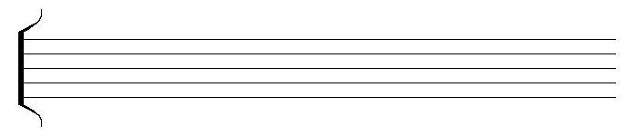

Reprezentarea grafică
Portativul

Portativul este locul unde vei lucra cel mai mult când vine vorba de muzică. Este o structură alcătuită din 5 linii și 4 spații pe care se plasează mare parte din simbolurile muzicale. În funcție de înălțimea notei pe care trebuie să o reprezentăm, o vom plasa mai sus sau mai jos pe portativ. Astfel, fiecare notă are locul ei pe portativ pentru a nu fi confundată.
Cheia sol

Cheia sol este un simbol care se plasează la începutul unui portativ și ne indică locul unde se află nota sol pe acel portativ. În acest caz, nota sol este se scrie pe a doua linie a portativului. Există și alte chei, cum ar fi cheia fa, care marchează nota fa pe a patra linie a portativului, însă în general vom lucra doar cu cheia sol, fiind cea mai intalinta dintre toate.
Durata notelor reprezentată grafic
Dacă înălțimea sunetului se marchează prin poziția pe portativ, durata se marchează prin tipul de notă folosit, reprezentată specific:
- Nota întreagă - se notează ca un oval gol, durează 4 timpi
- Doimea - asemănător notei întregi, are o linie la dreapta ei, durează 2 timpi
- Pătrimea - asemănător doimii, ovalul este umplut, durează un timp
- Optimea - asemănător patrimii, are un "steguleț", durează jumătate de timp
- Saisprezecimea - asemănător optimii, are încă un "steguleț", durează un sfert de timp.

Trebuie menționat că pentru fiecare nota de o anumita durată există si o pauză de aceeași durată. Exact ca si la notele muzicale, simbolurile devin din ce in ce mai interesante pe măsură ce durata scade.